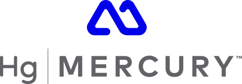
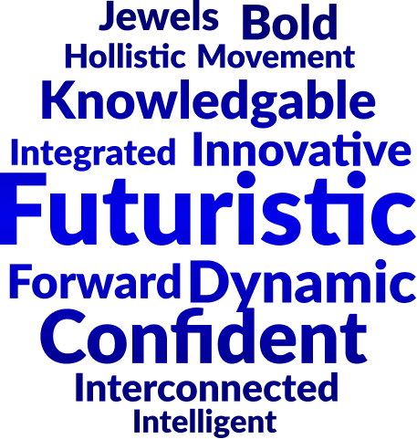
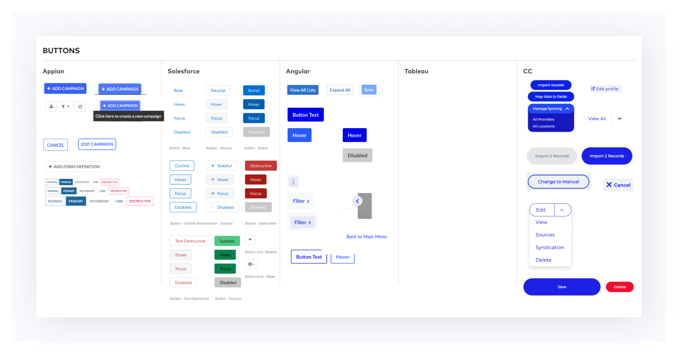
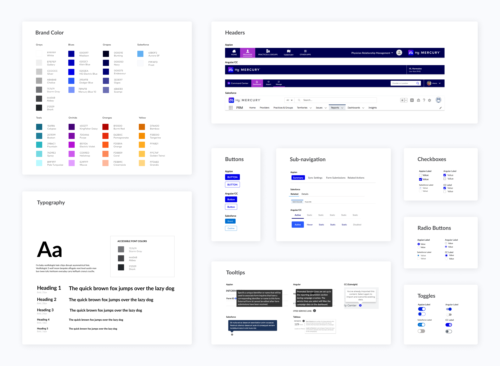
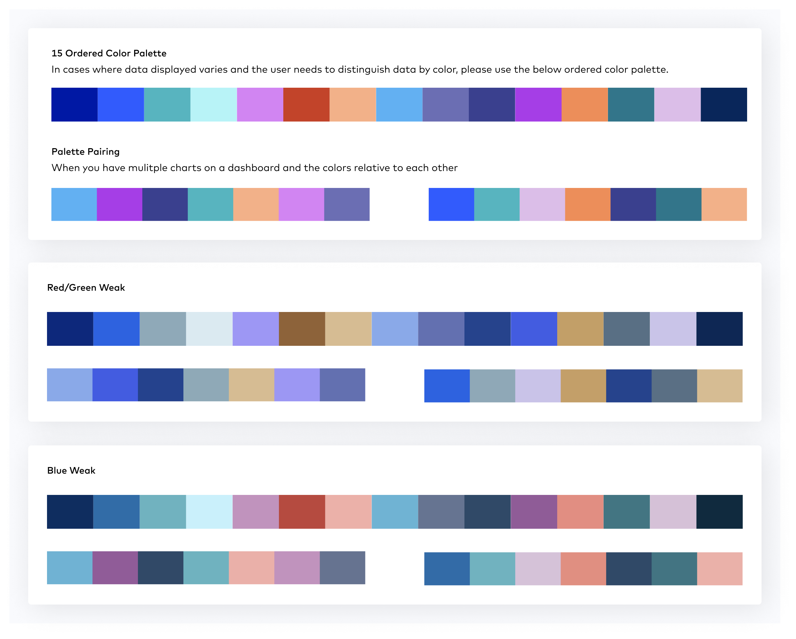
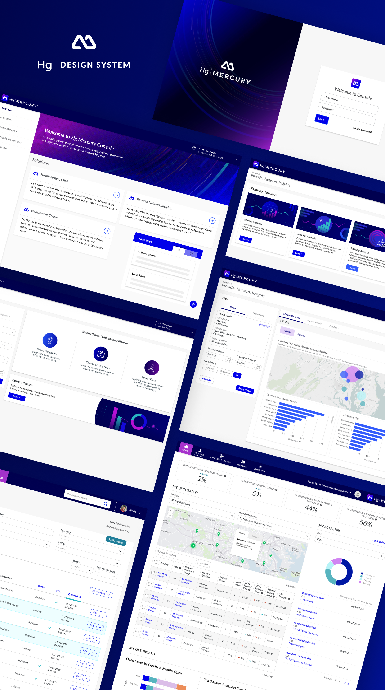

PROBLEM
Platform Unification
Healthgrades is the leading enterprise patient and provider engagement platform for hospital systems. The platform includes a suite of products built with different frontend frameworks including Salesforce, Appain, Tableau and Angular. My team and I were tasked with creating a design system that would unify the experience across all products while introducing our new brand Hg Mercury.

PROCESS
Understanding Mercury
Hg Mercury was a brand identity created by our marketing team to distinguish our new product offerings after an acquisition. With a style guide and some marketing page mockups, my team and I got to work creating a strategy for incorporating the new look and feel ito our applications.
Since this brand was a new to the design team, I wanted to conduct an exercise to define Mercury. I asked each designer to look through the assets provided and come up with 5-10 words to describe what they saw and felt. We presented our words, discussed the significance of each word and ended up with a word cloud which formed a lexicon around mercury. This artifact represented what we felt the experience should convey in regards to the brand.

Audit of Applications and Components
After defining the brand, I assigned each designer a frontend framework to research. I created a list of common components within our products and asked the designers to provide an example of each component in their assigned framework and understand the limitations of that component.

Workshops...Many Workshops
Once our audit was complete, we started looking at how these frameworks could work together. From research, we new that some of our frameworks were more flexible than the others. We went through each component looking for what we termed the ’lowest common denominator (i.e. the component's visual consistencies shared across all the frameworks) and started to define styles.

Data Visualization Accessibility
Due to the utilization of frontend frameworks, most of our components met our accessibility standards so we focused our efforts on the data vizualization within the 3 analytics products. Based on our customers, we knew that the data feeding into these tools would be varied and we wanted to ensure that the graph colors were always accessible. Working with our tableau team, we determined we would need to create a 15 ordered color palette and a couple smaller variations.
Using the existing colors provided, we tweaked and tested many variations until we developed a palette that met brand and accessibility standards.

PRODUCT
Mocks
After finalizing our designs, we reviewed our word cloud. Despite our efforts to create a cohesive design system, it didn't accurately reflect our brand's message. Due to the constraints of our framework components, we decided to focus on integrating the desired appearance and tone into our illustrations and micro copy. This initial phase significantly enhanced our design quality and established a framework for making future decisions and scaling our efforts.
